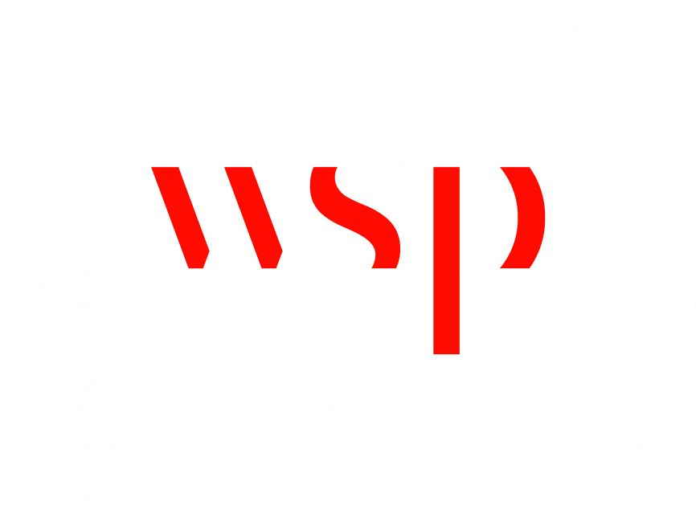
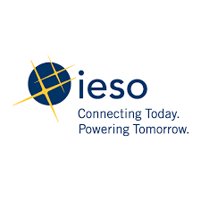
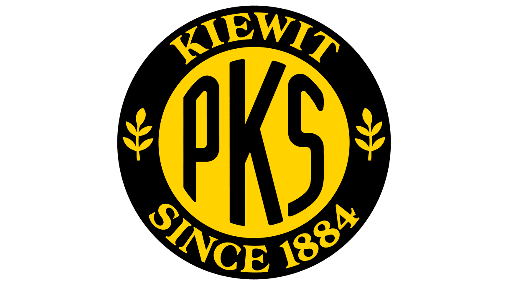

Professional Experience

Water & Wastewater Engineering Co-op — WSP
Sept 2025 – Dec 2025Supported reservoir design and environmental feasibility studies by coordinating multidisciplinary updates, verifying IFC drawings, and evaluating glycol treatment alternatives for aviation de-icing.

Contract Management & Settlements Co-op — IESO
Jan 2025 – Apr 2025Automated VBA-based settlement workflows, reconciliation tools, and reporting systems supporting over $7B in annual electricity contracts.

Field Engineering Intern — Kiewit
May 2024 – Aug 2024Supported construction planning and monitoring for the King Liberty SmartTrack Station, improving scheduling accuracy, material efficiency, and real-time reporting.
Environmental Engineering Co-op — WSP
May 2023 – Aug 2023Conducted environmental monitoring, groundwater sampling, and compliance inspections across active infrastructure sites in accordance with provincial and federal EHS regulations.
Market Forecasts & Integration Co-op — IESO
Jan 2022 – Apr 2022Supported grid operations and outage coordination using SCADA tools, automated Excel workflows, and cross-agency collaboration with Hydro One and OPG.